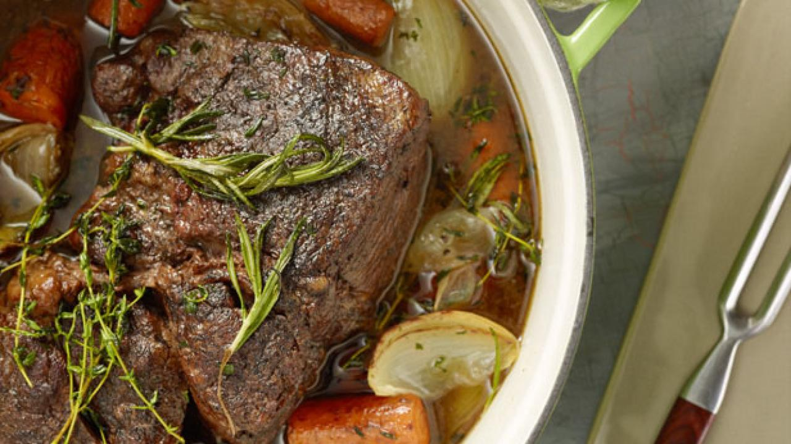

Pot Roast

Pot roast is an American beef dish made by slow cooking a tough cut of beef to tenderize it.
It is often cooked with vegetables in a liquid stock to provide a gravy to be served on top of the meat.
Ingredients
- 3-5 Pound chuck roast
- 2 onions peeled and halved
- 6-8 whole carrots but into 2" pieces
- 1 cup red wine
- 3 cups beef broth
- 1-3 sprigs rosemary
- 2-3 sprigs thyme
- Salt
- Black pepper
- 2 tbsp oil
Steps
- Preheat the oven to 250F.
- Sale and pepper the chuck roast.
- Heat the oil in a dutch oven over medium-high heat. Add the onions to the pot, browning on all sides. Remove to a plate.
- Add the carrots into the same pot and cook until browned, about 1 minute. Reserve the carrot with the onions.
- Sear the roast in the pot on all sides, adding more oil if needed. Remove the roast from the pot.
- Deglaze the pot using 1 cup of red wine. Place the roast back into the pot and add beef broth to cover the meat halfway.
- Add the onions, carrots, and fresh herbs.
- Cover with a lid, and place in the oven for 3-4 hours. The roast is ready when the meat is fall apart tender.